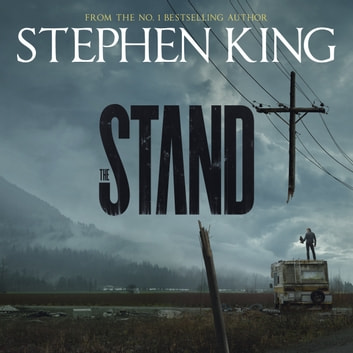
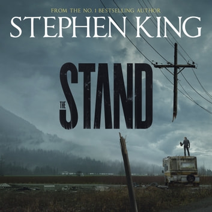

In my free time from school and work, I like to play video games, workout, read and trade (aka lose all my money) on the stock market. I seem to have a habit of starting books and never finishing them, so I have maybe 4-5 books that are left half-read, which is quite an unfortunate problem.
When it comes to working out, I usually work out in the gym in my hometown since I go home every weekend and stay on campus during the weekdays. I also go to LA Fitness on King Dr, and I used to go to XSport Fitness on State when it was 24 hours. I would normally go after work since I get off at 10pm, so having a gym that was close and open 24 hours was something I was looking for. But they since changed their hours so I stopped going there, but I started going to LA Fitness in the mornings, so it worked out in the end.
 
